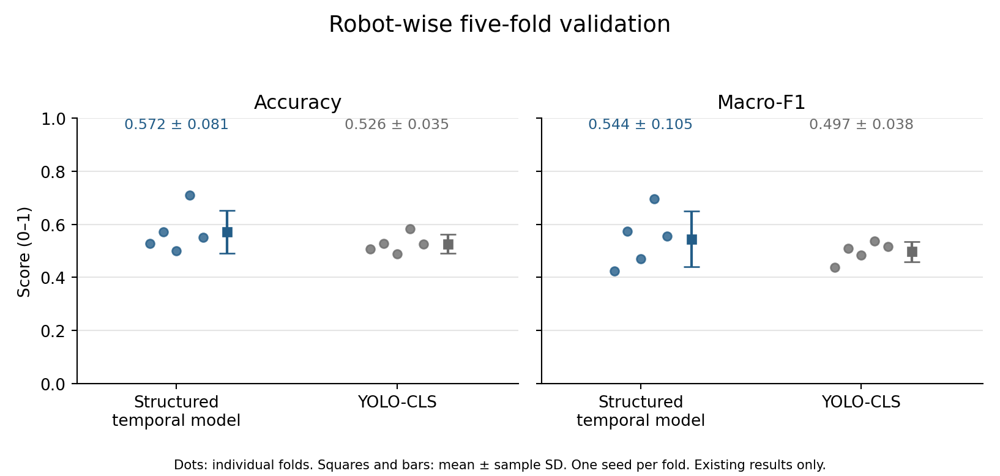
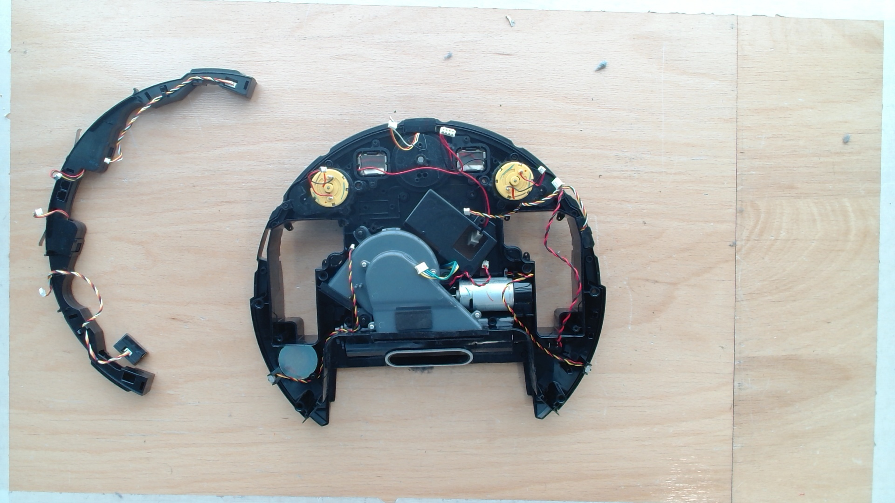

Research manuscript and existing cross-validation研究手稿与既有交叉验证
Visual next-step prediction in robotic disassembly机器人拆解的视觉下一步预测
Can temporal component evidence support the prediction of the next disassembly step across different robot-vacuum units?如何用扫地机器人部件的时序视觉证据预测下一拆解步骤，并评估跨机器人泛化？
This draft studies next-step prediction in robotic disassembly using component detections and structured temporal states. Existing robot-wise validation compares the sequence model with YOLO-CLS and shows a remaining cross-robot generalization gap.
该草稿利用部件检测与结构化时序状态研究机器人拆解的下一步预测。已有按机器人划分的验证对比时序模型与 YOLO-CLS，并显示跨机器人泛化仍有提升空间。

Approach研究方法
Overview概览
Detection and temporal evidence检测与时序证据
The method combines YOLO component detections, body/housing anchor selection, ternary component states and a temporal Transformer that predicts the next disassembly action.
该方法结合 YOLO 部件检测、body/housing 锚点筛选、三值部件状态与时序 Transformer，预测下一步拆解动作。
Existing records既有记录
Results结果
Robot-wise five-fold cross-validation: the sequence model reaches accuracy 0.5721 ± 0.0810 and macro-F1 0.5443 ± 0.1049, compared with 0.5260 ± 0.0353 and 0.4967 ± 0.0378 for YOLO-CLS (mean ± SD across folds).按机器人划分的五折交叉验证：时序模型 accuracy 0.5721 ± 0.0810、macro-F1 0.5443 ± 0.1049；YOLO-CLS 分别为 0.5260 ± 0.0353 和 0.4967 ± 0.0378（各折均值 ± 标准差）。
Figures & recordings图与录像
Media图像与视频

Manuscript研究手稿
Manuscript手稿
RIVET: A Multi-frame YOLO-Transformer for Next-Step Prediction in Robotic Disassembly
Zhaozheng Shen, Yang Ye